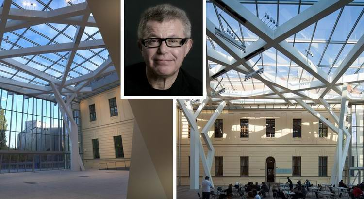
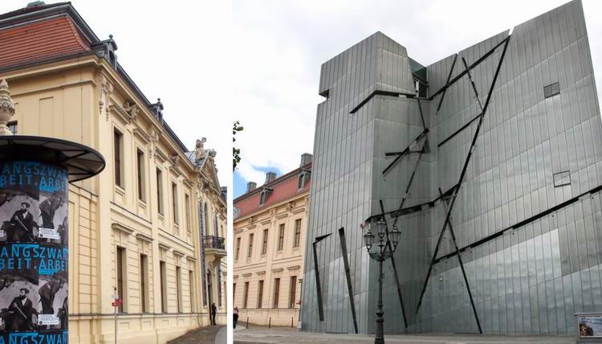
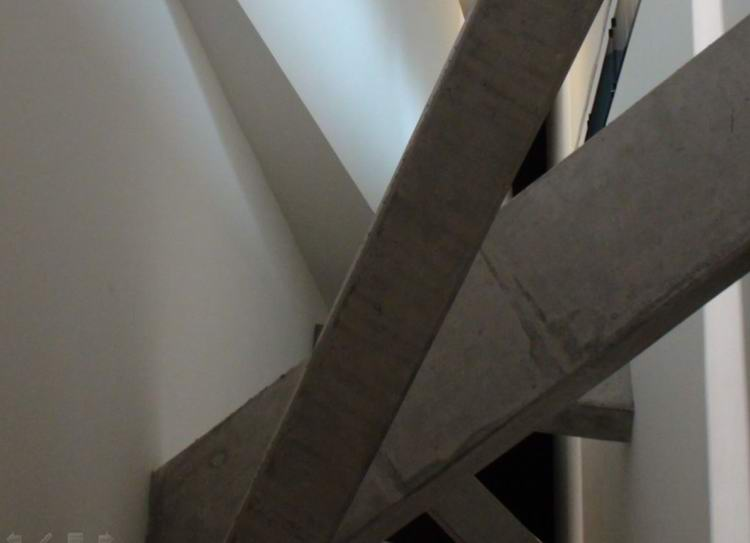
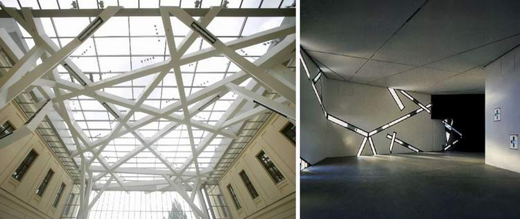
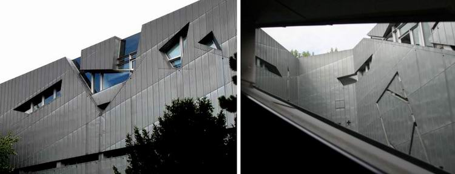
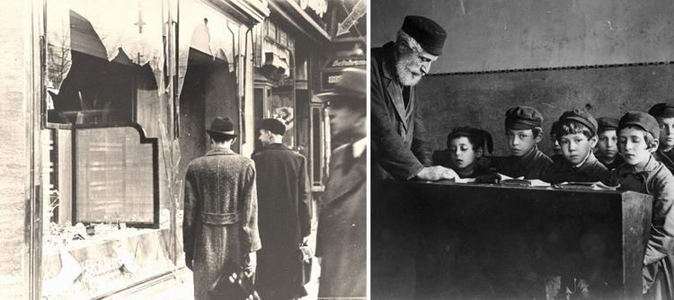
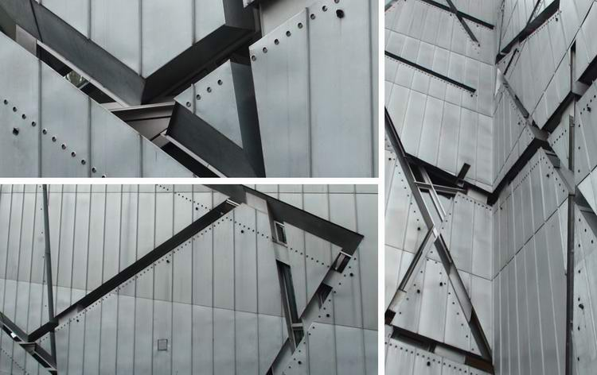
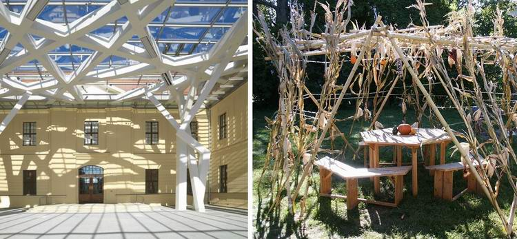
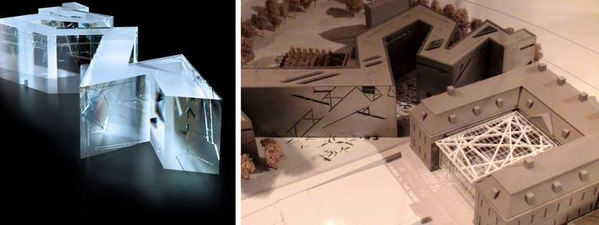

Daniel Libeskind's Sukkah. The Feast of Sukkot
The architecture of the Jewish Museum in Berlin translates into form the emotions, fears and hopes of the Jews throughout their long history. Libeskind's building, designed in the shape of a broken line, brought the architect international fame.

The museum consists of two buildings: the old building, U-shaped in plan, and the zigzag new building by the architect Daniel Libeskind. The first is an example of the Baroque, the second of Deconstructivism, a style imbued with the spirit of destruction.

The architect's design lets visitors feel, at least in part, the hardships that fell to the lot of the Jewish people.
Once inside the building, visitors immediately lose their sense of balance, because the floor of the museum slopes, and from the very first steps some effort is needed to move forward. Here too are the "Holocaust Tower", a small closed empty space with high black walls and a narrow opening at the very top, the "Garden of Exile", and more.

Daniel Libeskind's sukkah
The Glashof is a continuation of the museum. It is an inner courtyard crowned with a transparent roof of 670 square metres. The glass roof is held up by four columns of what look like woven branches, which pass into the free weave of the roof. The image behind this structure is the sukkah (booth) that every Jewish family builds for the Feast of Booths (Sukkot).
The Glashof is the most vulnerable thing one can imagine when speaking of Jewish history in Germany and of everything connected with the Holocaust. The most fragile and insecure… a huge shop window, for which one stone thrown "the right way" is enough.

Glashof is a German word meaning literally "glass courtyard". The first association that comes to my mind is another German word, Kristallnacht (the Night of Broken Glass, literally "crystal night"). If you type the word "crystal" into Google in Russian, it automatically completes the phrase with "night".
Kristallnacht was a vast pogrom against the Jews throughout Nazi Germany and part of Austria on 9–10 November 1938, carried out by the paramilitary SA units and by civilians.

The attacks left the streets covered with broken glass from the windows of Jewish-owned shops, buildings and synagogues. The German historian Hans Mommsen considered the main motive for the pogrom to be the wish of the regional party leaders of the National Socialist German Workers' Party to seize Jewish property and businesses.

After Kristallnacht the persecution of the Jews intensified. That night marks the beginning of the "Final Solution of the Jewish question" and the Holocaust.
Broken glass runs as a leitmotif through the design of Libeskind's whole Jewish Museum. A shattered world, the collapse of hope, catastrophe.

What is staggering is Libeskind's idea of placing, in the midst of catastrophe, destruction, collapsed beams and crushed hopes, this seemingly out-of-place quotation from the Torah: the Jewish sukkah, commanded by the Most High to His people.
Narrow dark spaces, paths and staircases leading to dead ends… Massive walls, heavy blocks and reinforced-concrete beams, which ought to carry a sense of certainty and security, are cast down.

And in contrast to all this there is an open, bright space, very insecure, especially given the associations I have already mentioned with Kristallnacht and the many broken Jewish windows, the many broken hopes and lives. The contrast between the mighty mass of darkness and the space flooded with light, covered by a glass veil that cannot protect, but lets one see the Sky.

The essence of the sukkah is the joy of the open sky overhead and trust in the Most High. Not thick walls or a secure structure, but our Father in heaven (Avinu she-ba-Shamayim) is our guarantee. What is frail and of God is more secure than the most secure thing made by man.
Author: Ephraim Kalish
Videos about the Jewish Museum Berlin: 1, 2, 3
Photos of our sukkah and how we built it can be seen here.
 The Rebirth of the State of Israel and Ancient Synagogue Mosaics
The Rebirth of the State of Israel and Ancient Synagogue Mosaics Tell Me About Your Sandals and I'll Tell You Who You Are. Part II
Tell Me About Your Sandals and I'll Tell You Who You Are. Part II Tell Me About Your Sandals and I'll Tell You Who You Are. Part I
Tell Me About Your Sandals and I'll Tell You Who You Are. Part I